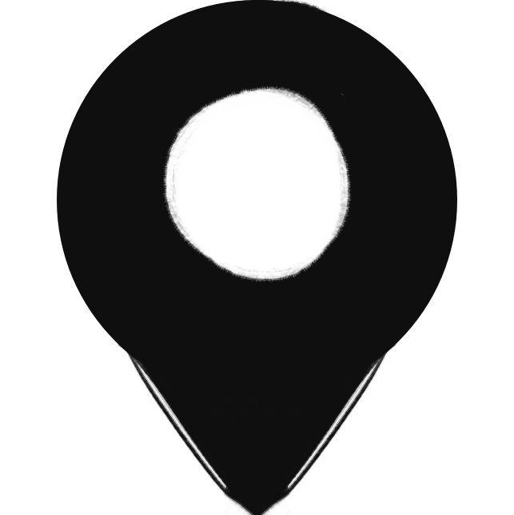

Perfil
Um dos fundadores da empresa Gray Matter Technologies Possuo grande visão de negócio, experiência em manuseio de compostos químicos com segurança e competência pra extrair da melhor forma e obter um produto com uma pureza ideal.
Tenho grande experiência na área de educação, lecionando química de uma maneira simples e objetiva. Pra mim, quimíca se trata de uma arte e o medo é o nosso pior inimigo.
Principais Competências
- Químico por formação
- Pesquisador
- Líder
- Revolucionário
- Adaptável
Formação Acadêmica
Graduação em licenciatura em Química pela California Institute of Technologies (1980) e pós Graduação em Química pela Universidade da Califórnia em Los Angeles (1982).
Experiência profissional
- Gray Matter Tecnologies(1980 - 1985)
- Cofundador
- Pesquisas
- Sadia Laboratories
- Quimico
- J. P. Wynne High School
- Professor
Contato
 308 Negra Arroyo Lane, Albuquerque, New Mexico, 87104